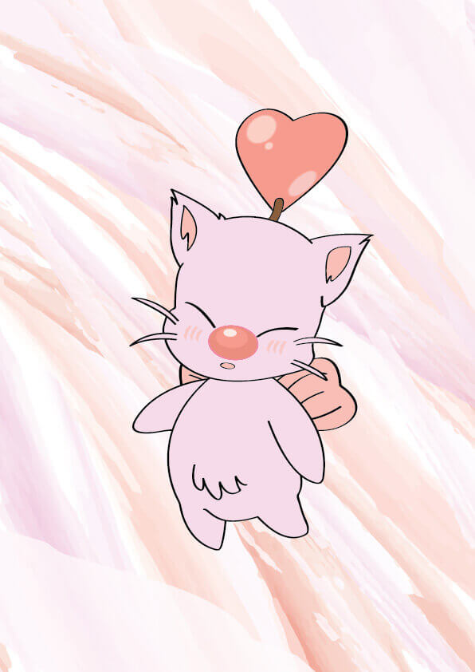

Twitch banner
Voor mijn vriendin had ik (buiten school om) een logo gemaakt voor voor haar Twitch account. Het logo is een variant van de bekende Moogle van de Final Fantasy serie. De illustratie heb ik gemaakt in Illustrator en de banner is gemaakt in Indesign.
